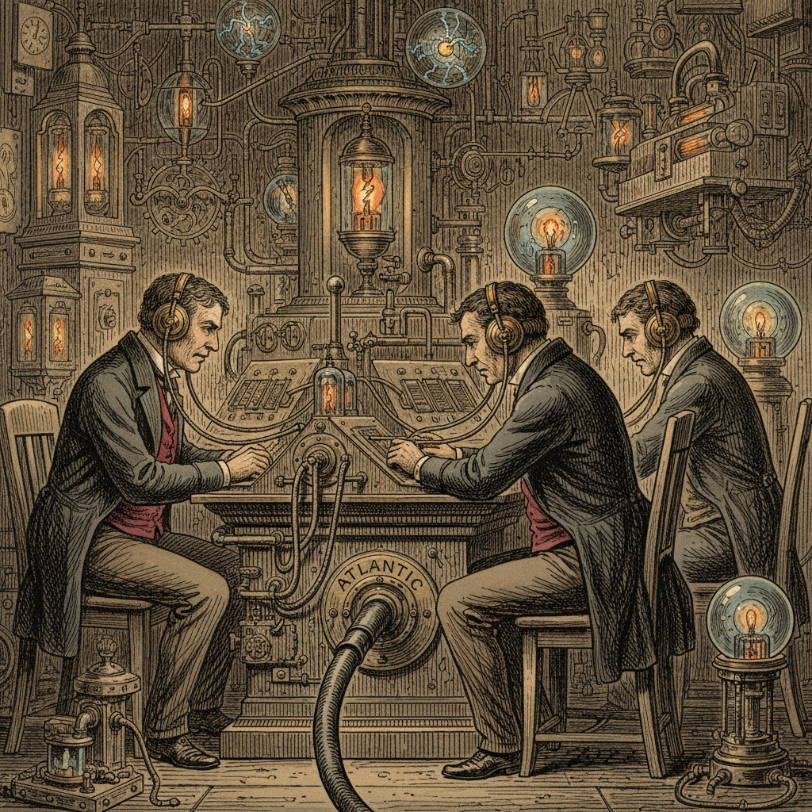

A Mysterious Pulse Upon the Atlantic Cable Dispatch from the Cable Station  Operators at the Atlantic cable station hearing mysterious Morse taps. At the Atlantic cable station, operators reported hearing mysterious Morse taps...